Git
本文最后更新于：2023年7月4日 晚上
修改commit注释
Git使用小技巧【修改commit注释, 超详细】-CSDN博客
.gitignore不生效的问题
第一种方法
.gitignore中已经标明忽略的文件目录下的文件，git push的时候还会出现在push的目录中，或者用git status查看状态，想要忽略的文件还是显示被追踪状态。
原因是因为在git忽略目录中，新建的文件在git中会有缓存，如果某些文件已经被纳入了版本管理中，就算是在.gitignore中已经声明了忽略路径也是不起作用的，这时候我们就应该先把本地缓存删除，然后再进行git的提交，这样就不会出现忽略的文件了。
解决方法: git清除本地缓存（改变成未track状态），然后再提交:
1
2
3
4git rm -r --cached .
git add .
git commit -m 'update .gitignore'
git push -u origin master需要特别注意的是：
1）.gitignore只能忽略那些原来没有被track的文件，如果某些文件已经被纳入了版本管理中，则修改.gitignore是无效的。
2）想要.gitignore起作用，必须要在这些文件不在暂存区中才可以，.gitignore文件只是忽略没有被staged(cached)文件，对于已经被staged文件，加入ignore文件时一定要先从staged移除，才可以忽略。
git 全局忽略文件
git add file_name 报错：
1
2
3
4
5The following paths are ignored by one of your .gitignore files:
xxx/index.js
hint: Use -f if you really want to add them.
hint: Turn this message off by running
hint: "git config advice.addIgnoredFile false"解决办法：
使用命令
git check-ignore -v file name去检测忽略配置来源于哪个文件1
2% git check-ignore -v src/components/app/index.js
/Users/xx/.gitignore_global:3:index.js src/components/app/index.js然后 cat 查看内容：
1
2
3
4% cat /Users/xx/.gitignore_global
*~
.DS_Store
index.js发现忽略列表里面添加了
index.js，然后去掉就可以了。
推送/克隆仓库时报错
解决方法：
产生原因：一般是这是因为服务器的SSL证书没有经过第三方机构的签署，所以才报错
方法一：解除 SSL 验证
git config --global http.sslVerify "false"方案二：取消代理（需要到项目工程目录打开Git Bash）
git config --global --unset http.proxygit config --global --unset https.proxy
Git SSH配置
配置SSH连接Git教程 - Only(AR) - 博客园 (cnblogs.com)
git ssh配置、密钥创建 - 简书 (jianshu.com)
IDEA 配置SSH 方式访问 GIT_半吊子Kyle的博客-CSDN博客_idea git ssh
Git 概述
Git 是一个免费的、开源的分布式版本控制系统，可以快速高效地处理从小型到大型的各种项目。
Git 易于学习，占地面积小，性能极快。 它具有廉价的本地库，方便的暂存区域和多个工作流分支等特性。其性能优于 Subversion、CVS、Perforce 和 ClearCase 等版本控制工具。
何为版本控制
版本控制是一种记录文件内容变化，以便将来查阅特定版本修订情况的系统。
版本控制最重要的是可以记录文件修改历史记录，从而让用户能够查看历史版本，方便版本切换。
为什么需要版本控制
个人开发过渡到团队协作。
版本控制工具
集中式版本控制工具
CVS、SVN(Subversion)、VSS……
集中化的版本控制系统诸如 CVS、SVN 等，都有一个单一的集中管理的服务器，保存所有文件的修订版本，而协同工作的人们都通过客户端连到这台服务器，取出最新的文件或者提交更新。多年以来，这已成为版本控制系统的标准做法。
这种做法带来了许多好处，每个人都可以在一定程度上看到项目中的其他人正在做些什么。而管理员也可以轻松掌控每个开发者的权限，并且管理一个集中化的版本控制系统，要远比在各个客户端上维护本地数据库来得轻松容易。
事分两面，有好有坏。这么做显而易见的缺点是中央服务器的单点故障。如果服务器宕机一小时，那么在这一小时内，谁都无法提交更新，也就无法协同工作。
分布式版本控制工具
Git、Mercurial、Bazaar、Darcs……
像 Git 这种分布式版本控制工具，客户端提取的不是最新版本的文件快照，而是把代码仓库完整地镜像下来（本地库）。这样任何一处协同工作用的文件发生故障，事后都可以用其他客户端的本地仓库进行恢复。因为每个客户端的每一次文件提取操作，实际上都是一次对整个文件仓库的完整备份。
分布式的版本控制系统出现之后,解决了集中式版本控制系统的缺陷:
- 服务器断网的情况下也可以进行开发（因为版本控制是在本地进行的）
- 每个客户端保存的也都是整个完整的项目（包含历史记录，更加安全）
Git 工作机制
Git 和代码托管中心
代码托管中心是基于网络服务器的远程代码仓库，一般我们简单称为远程库。
➢ 局域网
- ✓ GitLab
➢ 互联网
- ✓ GitHub（外网）
- ✓ Gitee 码云（国内网站）
Git 常用命令
| 命令名称 | 作用 |
|---|---|
| git config –global user.name 用户名 | 设置用户签名 |
| git config –global user.email 邮箱 | 设置用户签名 |
| git init | 初始化本地库 |
| git status | 查看本地库状态 |
| git add 文件名 | 添加到暂存区 |
| git commit -m “日志信息” 文件名 | 提交到本地库 |
| git reflog | 查看历史记录 |
| git reset –hard 版本号 | 版本穿梭 |
设置用户签名
- 1 ）基本语法
- git config –global user.name 用户名
- git config –global user.email 邮箱
- 说明：
- 签名的作用是区分不同操作者身份。用户的签名信息在每一个版本的提交信息中能够看到，以此确认本次提交是谁做的。
- Git 首次安装必须设置一下用户签名，否则无法提交码。
- 注意：这里设置用户签名和将来登录代码托管中心的账号没有任何关系。
初始化本地库
1）基本语法
- git init
2）案例实操
3）结果查看
查看本地库状态
1）基本语法
- git status
2）案例实操
首次查看（ 工作区没有任何文件）
新增文件（hello.txt ）
再次查看（ 检测到未追踪的文件）
添加暂存区
将工作区的文件添加到暂存区
1）基本语法
- git add 文件名
2）案例实操
3）查看状态（检测到暂存区 有新文件）
提交本地库
将暂存区的 文件 提交到本地库
1 ）基本语法
- git commit -m “ 日志信息” 文件名
2）案例实操
3）查看状态（没有文件需要提交）
修改文件
2）案例实操
3）查看状态（检测到工作区有文件被修改）
4）将修改的文件再次添加暂存区
5）查看状态（工作区的修改添加到了暂存区）
6）提交
7）查看状态
8）查看历史版本
9）查看文件（最新的文件）
历史版本
查看历史版本
1）基本语法
- git reflog 查看版本信息
- git log 查看版本详细信息
2）案例实操
版本穿梭
Git 切换版本，底层其实是移动的 HEAD 指针
1）基本语法
- git reset –hard 版本号
2）案例实操

Git 分支操作
什么是分支
在版本控制过程中，同时推进多个任务，为每个任务，我们就可以创建每个任务的单独分支。使用分支意味着程序员可以把自己的工作从开发主线上分离开来，开发自己分支的时候，不会影响主线分支的运行。对于初学者而言，分支可以简单理解为副本，一个分支就是一个单独的副本。（分支底层其实也是指针的引用）
分支的好处
同时并行推进多个功能开发，提高开发效率。
各个分支在开发过程中，如果某一个分支开发失败，不会对其他分支有任何影响。
失败的分支删除重新开始即可
分支的操作
| 命令名称 | 作用 |
|---|---|
| git branch 分支名 | 创建分支 |
| git branch -v | 查看分支 |
| git checkout 分支名 | 切换分支 |
| git merge 分支名 | 把指定的分支合并到当前分支上 |
查看分支
1）基本语法
- git branch -v
2 ）案例实操
创建分支
1）基本语法
- git branch 分支名
2）案例实操
切换分支
1）基本语法
- git checkout 分支名
2）案例实操
3）查看两个分支上的内容，会有不同
合并分支
1）基本语法
git merge 分支名
作用：把指定的分支合并到当前分支
2）案例实操 在 master 分支上合并 hot-fix 分支
- 注意：要先转到 master 分支上（因为只能合并到“当前分支”）

产生冲突
冲突产生的表现：后面状态为 MERGING
冲突产生的原因：
合并分支时，两个分支在 同一个文件的同一个位置有两套完全不同的修改。
Git 无法替我们决定使用哪一个。必须 人为决定新代码内容。
查看状态（检测到有文件有两处修改）
解决冲突
1）编辑有冲突的文件，删除特殊符号，决定要使用的内容
特殊符号：
1
2
3
4
5<<<<<<< HEAD
当前分支的代码
=======
合并过来的代码
>>>>>>> hot-fix修改为：
2）添加到暂存区
3）执行提交（注意：此时使用 git commit 命令时不能带文件名）
创建分支和切换分支图解
- master、hot-fix 其实都是指向具体版本记录的指针。
- 当前所在的分支，其实是由 HEAD决定的。所以创建分支的本质就是多创建一个指针。
- HEAD 如果指向 master，那么我们现在就在 master 分支上。
- HEAD 如果执行 hotfix，那么我们现在就在 hotfix 分支上。
- 所以切换分支的本质就是移动 HEAD 指针。
Git 团队协作机制
团队内协作
跨团队协作
GitHub 操作
创建远程仓库

远程仓库操作
| 命令名称 | 作用 |
|---|---|
| git remote -v | 查看当前所有远程地址别名 |
| git remote add 别名 远程地址 | 起别名 |
| git push 别名 分支 | 推送本地分支上的内容到远程仓库 |
| git clone 远程地址 | 将远程仓库的内容克隆到本地 |
| git pull 远程库地址别名 远程分支名 | 将远程仓库对于分支最新内容拉下来后 与当前本地分支直接合并 |
创建远程仓库别名
1）基本语法
- git remote -v 查看当前所有远程地址别名
- git remote add 别名 远程地址
2）案例实操
推送分支时报错
报错提示：
解决方法：
产生原因：一般是这是因为服务器的SSL证书没有经过第三方机构的签署，所以才报错
方法一：解除 SSL 验证
git config --global http.sslVerify "false"方案二：取消代理
git config --global --unset http.proxygit config --global --unset https.proxy
报错提示：
1
2
3
4
5$ git push -u origin master
fatal: 'git@github.com/zejun_web' does not appear to be a git repository
fatal: Could not read from remote repository.
Please make sure you have the correct access rights and the repository exists.解决方法：
先检查一下git remote -v

发现是 remote 命令错了
先 remove 掉，再添加再远程的 origin
1
git remote rm origin
再次使用 git remote -v 查看，发现已经没有 origin 了

再正确输入
1
git remote add origin https://gitee.com/shenlinlang/personal.git再 git push 就可以了

推送本地分支到远程仓库
1）基本语法
- git push 别名 分支
2）案例实操
拉取远程库到本地库
1）基本语法
- git pull 远程地址 分支
2）案例实操
克隆远程库到本地
总结：clone 会做如下操作： 1、拉取代码。 2、初始化本地仓库。 3、创建别名
1）基本语法
- git clone 远程地址
2）案例实操
邀请加入团队
1）选择邀请合作者
2）填入想要合作的人
3）复 制 地 址 并 通 过 微 信 钉 钉 等 方 式 发 送 给 该 用 户 ， 复 制 内 容 如 下 ：
https://github.com/atguiguyueyue/git-shTest/invitations
4）在 atguigulinghuchong 这个账号中的地址栏复制收到邀请 的 链接，点击接受邀请
5）在成功之后可以在 atguigulinghuchong 这个账号上看到 git-Test 的远程仓库
6）令狐冲可以修改内容并 push 到远程仓库
跨团队协作
1）将远程仓库的地址复制发给邀请跨团队协作的人，比如东方不败
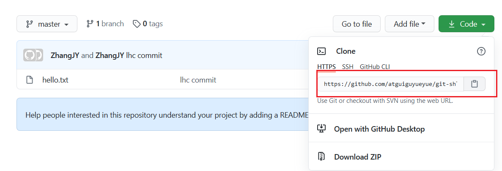
2）在东方不败的 GitHub 账号里的地址栏复制收到的链接，然后点击 Fork 将项目叉到自己的本地仓库

叉成功后可以看到当前仓库信息

3）东方不败就可以在线编辑叉取过来的文件
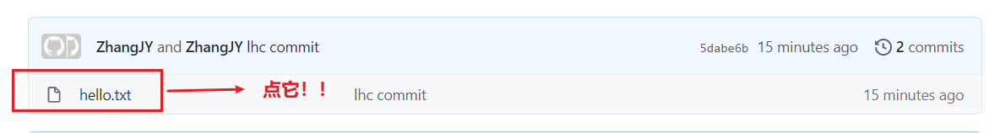
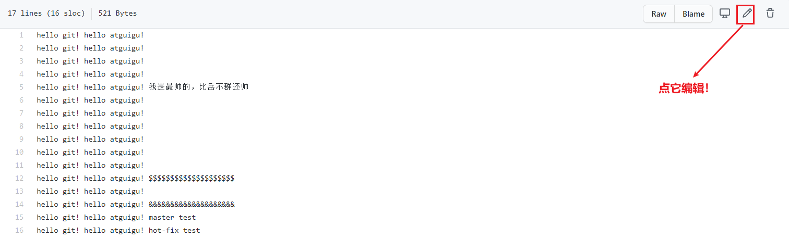
4）编辑完毕后，填写描述信息并点击左下角绿色按钮提交
5）接下来点击上方的 Pull 请求，并创建一个新的请求

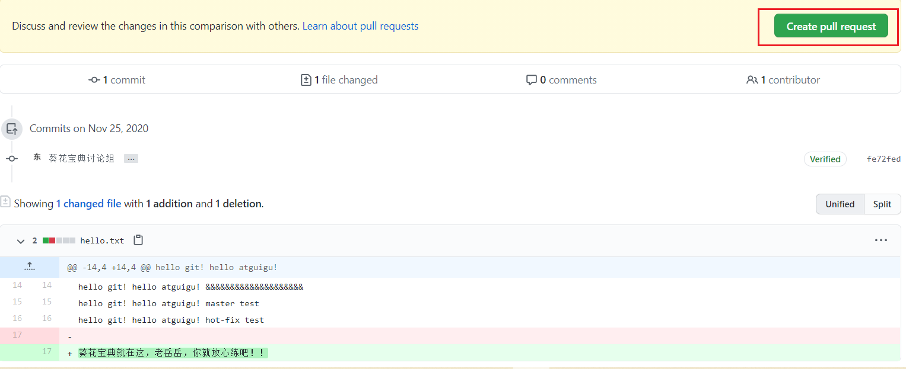
6）回到岳岳 GitHub 账号可以看到有一个 Pull request 请求
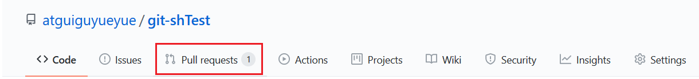
进入到聊天室，可以讨论代码相关内容

7）如果代码没有问题，可以点击 Merge pull reque 合并代码

SSH 免密登录
我们可以看到远程仓库中还有一个 SSH 的地址，因此我们也可以使用 SSH 进行访问。
具体操作如下：
1 | |
复制 id_rsa.pub 文件内容，登录 GitHub，点击用户头像→Settings→SSH and GPG keys
接下来再往远程仓库 push 东西的时候使用 SSH 连接就不需要登录了
IDEA 集成 Git
配置 Git 忽略文件
为什么要忽略它们
与项目的实际功能无关，不参与服务器上部署运行。忽略掉它们能够屏蔽 IDE 工具之间的差异
怎么忽略
1）创建忽略规则文件 xxxx.ignore（前缀名随便起，建议是 git.ignore）
这个文件的存放位置原则上在哪里都可以，为了便于让~/.gitconfig 文件引用，建议也放在用户家目录下
git.ignore 文件模版内容如下：
1
2
3
4
5
6
7
8
9
10
11
12
13
14
15
16
17
18
19
20
21
22
23
24
25
26
27
28
29
30
31# Compiled class file
*.class
# Log file
*.log
# BlueJ files
*.ctxt
# Mobile Tools for Java (J2ME)
.mtj.tmp/
# Package Files #
*.jar
*.war
*.nar
*.ear
*.zip
*.tar.gz
*.rar
# virtual machine crash logs, see
http://www.java.com/en/download/help/error_hotspot.xml
hs_err_pid*
.classpath
.project
.settings
target
.idea
*.iml2）在.gitconfig 文件中引用忽略配置文件（此文件在 Windows 的家目录中）
1
2
3
4
5
6[user]
name = Layne
email = Layne@atguigu.com
[core]
excludesfile = C:/Users/asus/git.ignore
# 注意：这里要使用“正斜线（/）”，不要使用“反斜线（\）”
定位 Git 程序

初始化本地库
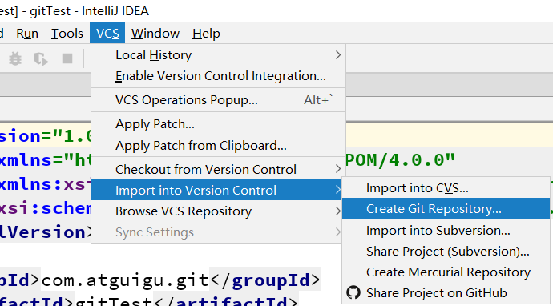
添加到暂存区
右键点击项目选择 Git -> Add 将项目添加到暂存区。

提交到本地库
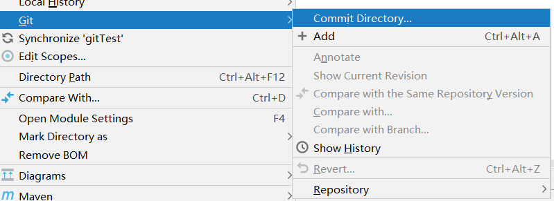
切换版本
在 IDEA 的左下角，点击 Version Control，然后点击 Log 查看版本

右键选择要切换的版本，然后在菜单里点击 Checkout Revision。
创建分支
右键项目名称，选择 Git，在 Repository 里面，点击 Branches 按钮。

或者直接右下角
在弹出的 Git Branches 框里，点击 New Branch 按钮。

填写分支名称，创建 hot-fix 分支。

然后再 IDEA 的右下角看到 hot-fix，说明分支创建成功，并且当前已经切换成 hot-fix 分支

切换分支
在 IDEA 窗口的右下角，切换到 master 分支。
然后在 IDEA 窗口的右下角看到了 master，说明 master 分支切换成功。

合并分支
在 IDEA 窗口的右下角，将 hot-fix 分支合并到当前 master 分支。
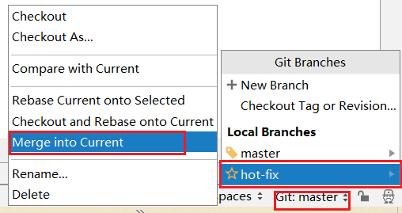如果代码没有冲突，分支直接合并成功，分支合并成功以后，代码自动提交，无需手动提交本地库

解决冲突
如图所示，如果 master 分支和 hot-fix 分支都修改了代码，在合并分支的时候就会发生冲突。

我们现在站在 master 分支上合并 hot-fix 分支，就会发生代码冲突。
点击 Conflicts 框里的 Merge 按钮，进行手动合并代码。

手动合并完代码以后，点击右下角的 Apply 按钮。
代码冲突解决，自动提交本地库。
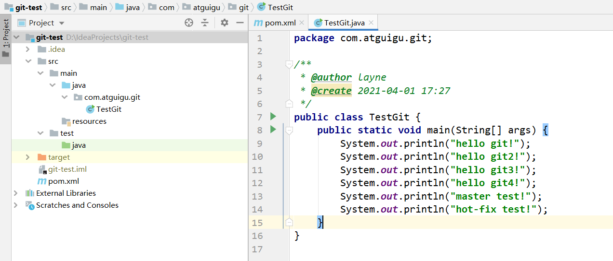
IDEA 集成 GitHub
设置 GitHub 账号

然后去 GitHub 账户上设置 token。
 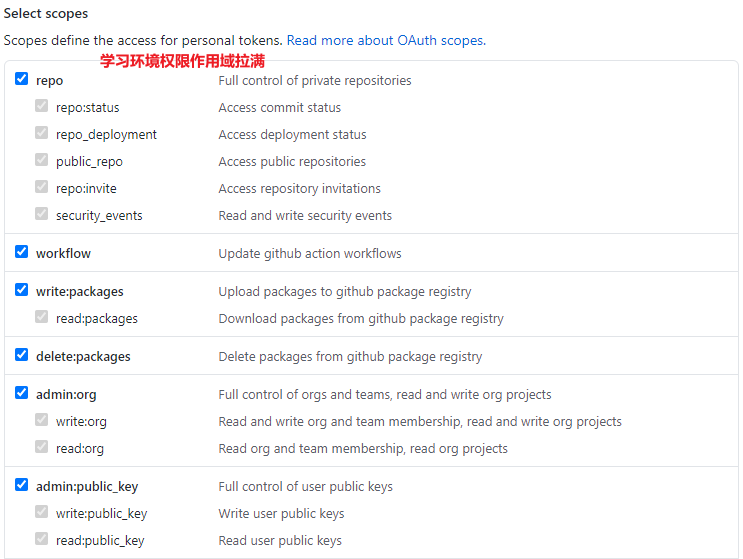
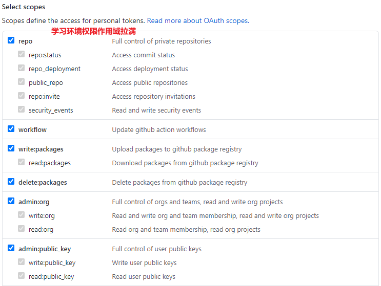
点击生成 token。
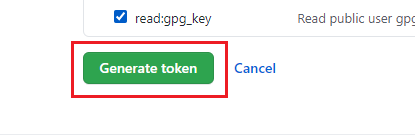复制红框中的字符串到 idea 中。
点击登录。
分享工程到 GitHub
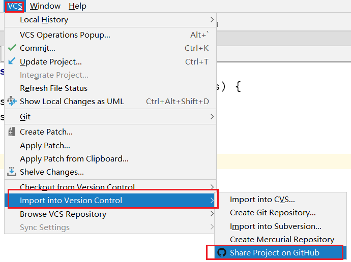 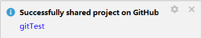
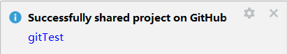
来到 GitHub 中发现已经帮我们创建好了 gitTest 的远程仓库

push 推送本地库到远程库
注意：push 是将本地库代码推送到远程库，如果本地库代码跟远程库代码版本不一致，push 的操作是会被拒绝的。也就是说，要想 push 成功，一定要保证本地库的版本要比远程库的版本高！因此一个成熟的程序员在动手改本地代码之前，一定会先检查下远程库跟本地代码的区别！如果本地的代码版本已经落后，切记要先 pull 拉取一下远程库的代码，将本地代码更新到最新以后，然后再修改，提交，推送！
右键点击项目，可以将当前分支的内容 push 到 GitHub 的远程仓库中。

pull 拉取远程库到本地库
注意：pull 是拉取远端仓库代码到本地，如果远程库代码和本地库代码不一致，会自动合并，如果自动合并失败，还会涉及到手动解决冲突的问题。
右键点击项目，可以将远程仓库的内容 pull 到本地仓库。


clone 克隆远程库到本地


为 clone 下来的项目创建一个工程，然后点击 Next。


 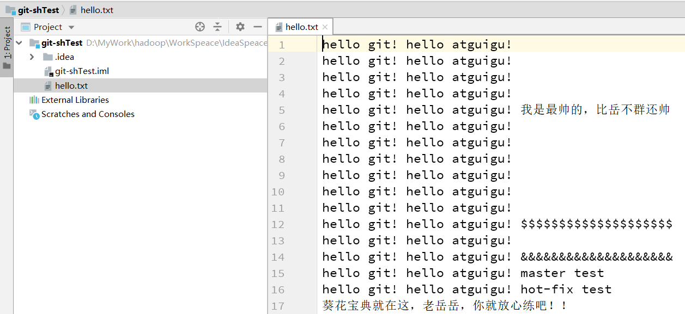
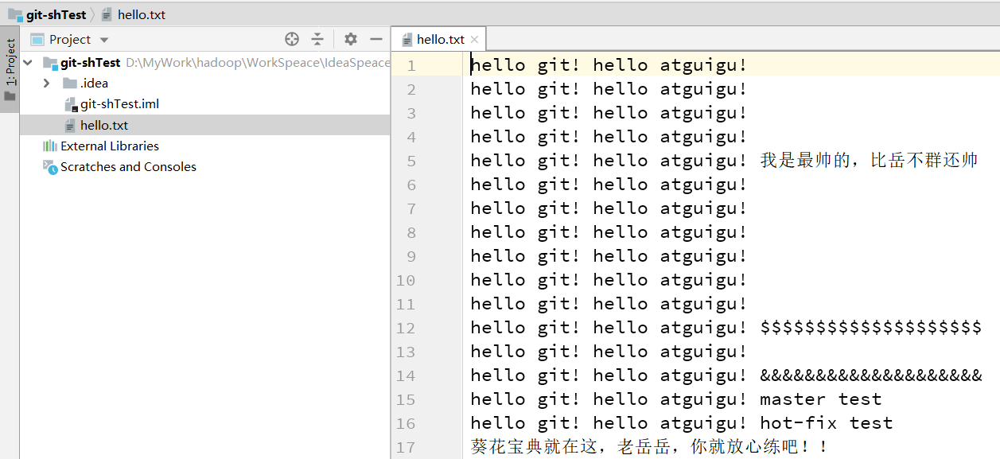
国内代码托管中心- 码云
简介
众所周知，GitHub 服务器在国外，使用 GitHub 作为项目托管网站，如果网速不好的话，严重影响使用体验，甚至会出现登录不上的情况。针对这个情况，大家也可以使用国内的项目托管网站-码云
码云是开源中国推出的基于 Git 的代码托管服务中心，网址是 https://gitee.com/ ，使用方式跟 GitHub 一样，而且它还是一个中文网站，如果你英文不是很好它是最好的选择。
码云创建远程库
点击首页右上角的加号，选择下面的新建仓库
填写仓库名称，路径和选择是否开源（共开库或私有库）
最后根据需求选择分支模型，然后点击创建按钮
远程库创建好以后，就可以看到 HTTPS 和 SSH 的链接
IDEA 集成码云
IDEA 安装码云插件
Idea 默认不带码云插件，我们第一步要安装 Gitee 插件。
如图所示，在 Idea 插件商店搜索 Gitee，然后点击右侧的 Install 按钮。
然后在码云插件里面添加码云帐号，我们就可以用 Idea 连接码云了。
IDEA 连接码云
Idea 连接码云和连接 GitHub 几乎一样，首先在 Idea 里面创建一个工程，初始化 git 工程，然后将代码添加到暂存区，提交到本地库，这些步骤上面已经讲过，此处不再赘述。
码云复制 GitHub 项目
码云提供了直接复制 GitHub 项目的功能，方便我们做项目的迁移和下载。
具体操作如下：
将 GitHub 的远程库 HTTPS 链接复制过来，点击创建按钮即可。
如果 GitHub 项目更新了以后，在码云项目端可以手动重新同步，进行更新！